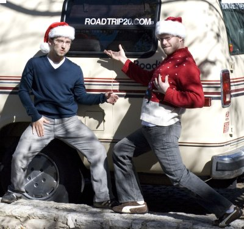

Other Brave Souls
We thought driving around in a 25 year old van was bad enough. These guys decided to use a Segway! Kudos to the 10 MPH team.
Popularity: 89% [?]
We thought driving around in a 25 year old van was bad enough. These guys decided to use a Segway! Kudos to the 10 MPH team.
Popularity: 89% [?]
The madness of the holidays is fast approaching, and we still have a van to unpack! Once things settle down we’re going to do some more posts about the trip as a whole, what we learned, if we’d recommend it, etc, so don’t be a stranger. In the mean time, enjoy your meager vacation-time and drive safely!

Popularity: 88% [?]
Reuters
At 2:29 EST, the brave crew of RT2.0 and their trusty van pulled into Ben’s parents’ driveway, completing their arduous journey. The rest of the house asleep, Ben and Alexi celebrated quietly in their smoking jackets, enjoying illegal Cuban cigars and a 50 year old single malt. Brief moments of silence & reflection punctuated what otherwise could only be described as a solemn bout of Hi-Fiving and other forms of self-congratulation.
What’s next for these two lifecationers? It almost seems unlikely that their Herculean abilities could be duly matched. What we do know is that Alexi is traveling to the Orient on a continued search of life’s challenges (think clubs in Taipei and Thai beaches,) while Ben plans a period of fasting, meditation, and Colon Blow usage. We can only hope that these sage competitive-eaters of Life’s fruit share their lessons with us on RoadTrip20.com from time to time. Godspeed, gentlemen.
Popularity: 96% [?]
Whew! One more minute with see-sawing Santa and we might have horled our gortz. In case you were wondering, Ben’s web hosting company upgraded from Apache 1.3 to 2.0 over night, which proceeded to break some of our handcrafted bandaids, snares, and hoo-has. Anyway, we moved all the Road Trip files over to my server last night, used our smarts for fixin’, and we should be good to go. Nevertheless, in the odd chance you see anything out of the ordinary please shoot us an email.
Popularity: 87% [?]
It’s official, Miami Beach is awesome.
We drove in last night cutting New Orleans a little short; we weren’t quite up to obliterating our livers at the time. We decided to camp here with the same method we used in Manhattan Beach: take advantage of free overnight street parking (our street). It works really well. You’re close to the beach, you’re in the middle of things, and it’s free. The downside is that you don’t have a bathroom handy. Also, in Miami, it’s really hot and humid, even at 8:00am in December. Imagine waking up in the back of a van striped down to your undies and still sweating uncontrollably… or just take our word for it.
To combat this, tomorrow morning as soon as I am awakened by muggy miserableness, I’m running straight for the beach and jumping in the ocean. The benefits are two-fold: cool off (although as we found out today the water’s very comfortable), and get some exercise. The second aspect comes in handy for us, as we’re both tipping the scales higher than we ever have before. Road Trip 2.0 now weighs a cumulative 6300 lbs (you can ponder the split). Shameful.
Popularity: 90% [?]
After Austin, we headed to Fayetteville, Arkansas to visit cousins of mine. It was really good to see them all two nights in a row. It’s always interesting to see people grow throughout the years, and since we seem to meet up every six or seven years, it always makes it more interesting catching up after/while going through various stages in life.
In fact, the last time we all got to hang out, my hair was dyed green, I had one visible piercing among others, and I was in the dead-center of my rave days having just taken the lease on a warehouse that would further change my life. Now, we’re growing up, drinking beer, getting married, and making our lives our own in the best ways we know how…whether it’s going back to school, living in a van, exploring e-commerce, or making your life and business 40 minutes outside of the nearest town.
In addition to catching up on lost time, Karma, Katherine, Bauer and I went on a beautiful hike through part of the Ozarks. One of the things we’ve mentioned on this blog, and even more often between Alexi and I, is that there seems to be an infinite number of environments in this country. The Ozarks brought yet another environment to explore.
The Ozarks feel as old as the Blue Ridge and Appalachian mountains, but instead of being on an igneous foundation of granite, they are on a sedimentary foundation of limestone (Though I’ve also heard there’s phenomenal sandstone climbing around there as well). Being that Fall is finally over, there were no leaves in the trees, offering an austere scene from the higher cliff lines.
We also got to see some of downtown Fayetteville’s massive spectacle of Christmas lights, their “very accurate Statue of Liberty”, and got our butts whipped at Mario Kart and shooting pool. I’d say that the humiliating defeats in sport and game really topped off the trip.
Popularity: 100% [?]
Anyone who knows me and my culinary preferences knows how much I love a good burrito.
Ben = Burrito lover. Burrito lover = Ben.
How can you not love a burrito? It’s a glorious configuration of nutrition (protein, carbs, and vegetables) and flavor (seasoned steak and hot sauce) all wrapped up in a neat, portable, shiny package. Anyone who argues against the deliciousness of a good burrito should check themselves into the looney bin. Now.
Those who are familiar with my burrito-love have also likely heard me declare the supremacy of a Texas chain called: Freebirds. Until this trip, I had only eaten at Qdoba, Chipotle, Moe’s and other miscellaneous Mexican restaurants with less of a focus on the burrito.
After this trip, I’ve eaten burritos at about a dozen cities throughout the continent. Aside from the uniquely fantastic burrito at “La Paz” in Los Angeles, my declaration of Freebirds having the world’s best burrito still stands.
To commemorate the verification of this declaration, I decided to celebrate.
I celebrated with what’s known as the “Super Monster.” Other than places like Golden Corral, it’s the epitome of gluttony: Two 14″ tortillas, end to end, in a massive 3+ pound structure and composition that’s larger than my face.
I prepared by eating 3 “Monster” burritos in 8 hours in Dallas, 3 days before. To shove this thing down your gullet requires sincere and dedicated preparation fit for the Olympics.

75% Done:

As symbolically as man’s landing on the moon, I finished it.
Popularity: 96% [?]
The rules of Road Trip 2.0, the third leg; balls of holly.

Merry. Freakin. Christmas.
Popularity: 97% [?]
Right now, we’re driving up I-35 from Austin to Fayetteville, Arkansas. We’re listening to Christmas music, in our Santa hats, the Christmas lights are on, and my knit Christmas sweater is out in full effect. Sometimes, that effect is nauseating, but the clear skies and brisk temperature are reducing the sensation.
Austin has never been a bad time. Ever. And this trip continued the dynasty.
We stayed with our good friend Tim through the weekend, resulting in a trifecta of 20-something awesomeness brought into the world in a matter of 48 hours in July of 1981.
Friday night we met up with our friend Tray and headed straight for Chuy’s, the classic Mexican restaurant in Austin, stuffing our faces with deluxe tomatillo sauce, burritos and enchiladas. People who haven’t lived in Texas and other similar border-sharing states often have a difficult time grasping the fantastical deliciousness of great Mexican food. For them, I recommend a hearty filling of Chuy’s.
Next, we met up with some other friends, Daniel, Toddy and Sarah, and went to a bar called Creekside - a bar with reasonable drink prices, a decent jukebox, and walls adorned with oil-paintings inspired by leather and bondage fetishes…seating position and directionality was crucial to avoid staring at certain, awkward, visual arts.
We rounded out the night throwing it down and destroying the dance floor at Beauty Bar. The opening act was a band that played a bit too long for those of us with our dancing shoes and feet itching for a good time. Finally, the DJ came on and opened with Daft Punk’s Revolution 909 from their classic album, Homework, and our expectations of a nuclear war on the dance floor began to become self-fulfilling.
On this night, I decided to rock out with the disgustingly over-the-top Christmas cheer of Road Trip 2.0 and adorn myself in my $6 knit Goodwill Christmas sweater, complete with dog and un-looped threads accentuating the dog’s scarf, and my deluxe Santa hat from Walgreens. The kids seemed to appreciate it, as did the awesomely cute sociology major who suggested that I take swing classes instead of salsa or tango who I will likely and unfortunately never hear from again. (Mental Note: Another situation in which having a cell phone is a good thing.)
Then, it was back to Tim’s place for more Lone Star beer and passing out on the floor.
Popularity: 97% [?]
It’s funny that I worked at a (the?) major distributor of commercial WiFi for just about 3 years and never used the product once. That’s not to say that I never used wireless, I just never had to pay for it before. And I still wouldn’t, if I wasn’t a such a fan of convenience.
Read why after the jump.
Read the rest of this entry »
Popularity: 96% [?]
Subscribe to the RSS Feed
Be a MySpace friend
Be a FaceBook friend
Be a Flickr contact